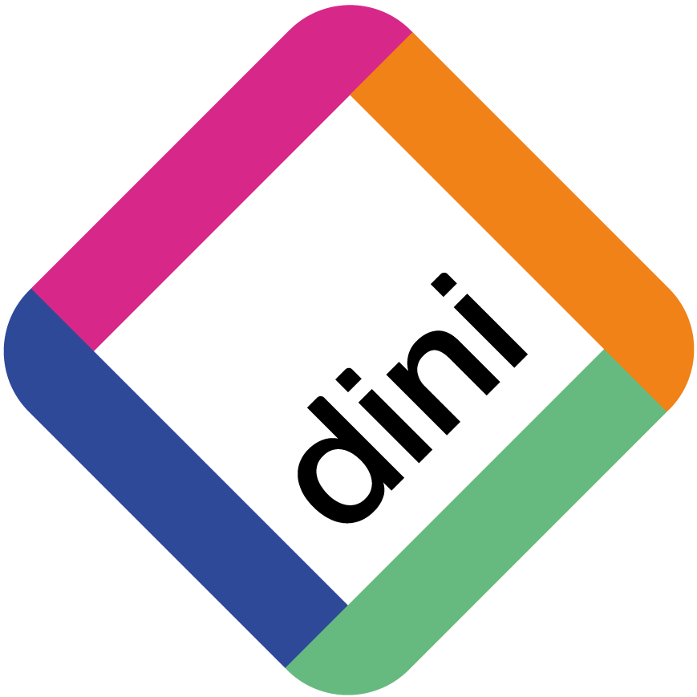
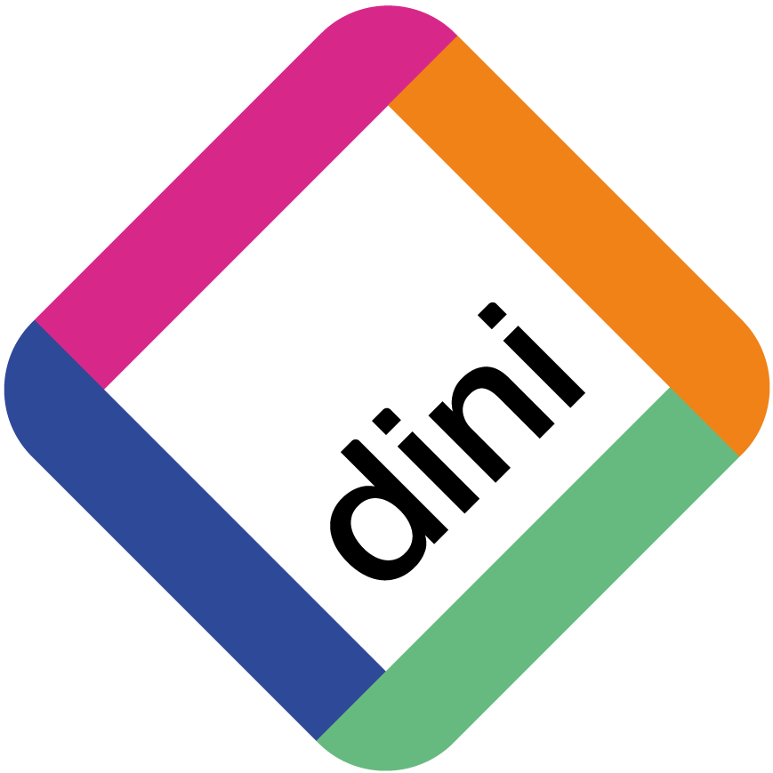

Standardisierung von OER-Metadaten
Ein Plädoyer
Adrian Pohl /
@acka47
Linked
Open Data, Hochschulbibliothekszentrum NRW (hbz), DINI AG KIM
 

Frankfurt am Main, 2019-06-18
Diese Präsentation:
http://slides.lobid.org/standardisierung-ffm/

Ziele der OER-Metadatengruppe von KIM/Jointly:
Ressourcen zu einem Nischenthema (OER-Infrastruktur) bündeln
Zukunftsfähige öffentliche Empfehlungen bereitstellen
Doppelarbeiten vermeiden
Rückblick
2013: Zwei Metadaten-Sessions auf der OERde13 in Berlin (Bericht), Gründung der OER-Metadatengruppe innerhalb der DINI AG KIM
August 2014: Empfehlungen zur Publikation von OER-Metadaten - erster Entwurf
Februar 2016: DIPF-"Machbarkeitsstudie zum Aufbau und Betrieb von OER-Infrastrukturen in der Bildung"
August 2017: Fusion mit jointly-Metadatengruppe, Beginn relmäßiger Online-Treffen
26. Februar 2019: Letztes stattgefundenes Online-Treffen
Status quo
✔ Sechs Jahre OER-Metadatengruppe
Null abgeschlossene Empfehlungen
Herausforderung
Ein zur stetiger Prozess zur Entwicklung von Standards bei knappen Ressourcen
Was fehlt:
Kontinuität
Was wir brauchen:
klare Ziele
einen klaren Prozess
interessierte und aktive Mitglieder
Wie sieht es in anderen Zusammenhängen aus?
Werden Standards (weiter)entwickelt? Welche?
Gibt es klare Verantwortlichkeiten und Prozesse?
Ressourcenprobleme? Wunsch nach Unterstützung/Zusammenarbeit?
Die Kernfragen
- Was wollen wir mit welcher Priorität standardisieren?
- In welchem Zeitraum?
- In welchem Rahmen findet die Standardisierung statt?
- Wie schaffen wir eine inklusive Atmosphäre, sind offen für Neueinsteiger?
- Wo wird diskutiert und eingeladen?
- Wie werden Empfehlungen erarbeitet & veröffentlicht? Woraus sollten sie bestehen?
- Welche Rollen sind nötig?
1. Was wollen wir mit welcher Priorität standardisieren?
Kontrollierte Vokabulare: Fächersystematik, Ressourcentypen etc.
Metadatenschemata: Services (Visitenkarte), Curriculum, Kurs, Stunde, Arbeitsblatt, Lehrbuch, Prüfung etc. –
2. In welchem Zeitraum?
M. E. sollten wir mindestens ein Jahr, eher anderthalb bis zwei einplanen
3. In welchem Rahmen findet die Standardisierung statt?
Die OER-Metadatengruppe von DINI KIM/Jointly bietet sich an
4. Wie schaffen wir eine inklusive Atmosphäre?
Einstiegshürden minimieren
Bitte um Feedback: Was sind die wichtigsten Punkte, die verbessert werden müssen?
5. Wo wird diskutiert und eingeladen?
Angelehnt an Prozesse beim W3C oder DCMI: Mailingliste, GitHub/Gitlab plus regelmäßige Treffen (online & offline), Wiki für Protokolle
6. Wie werden Empfehlungen erarbeitet & veröffentlicht?
Verfassen auf GitHub, Diskussion via GitHub und Mailingliste
Spezifikation mit Beispiel und Schema zur Validierung (bei Metadatenschemas) bzw. Lookup-API (bei kontrollierten Vokabularen)
W3C-Beispiel JSON-LD 1.1 Spec: GitHub Repo, HTML Draft, Mailingliste
7. Welche Rollen sind nötig?
Convener*in: Eine Person, die sich um die Einberufung und Moderation regelmäßiger Treffen kümmert
Herausgeber*in: Eine Person, die sich um die Umsetzung der disutierten Punkte im Empfehlungsdokument kümmert
Plädoyer dafür, morgen diese Fragen hier zu diskutieren und erste Antworten zu finden.